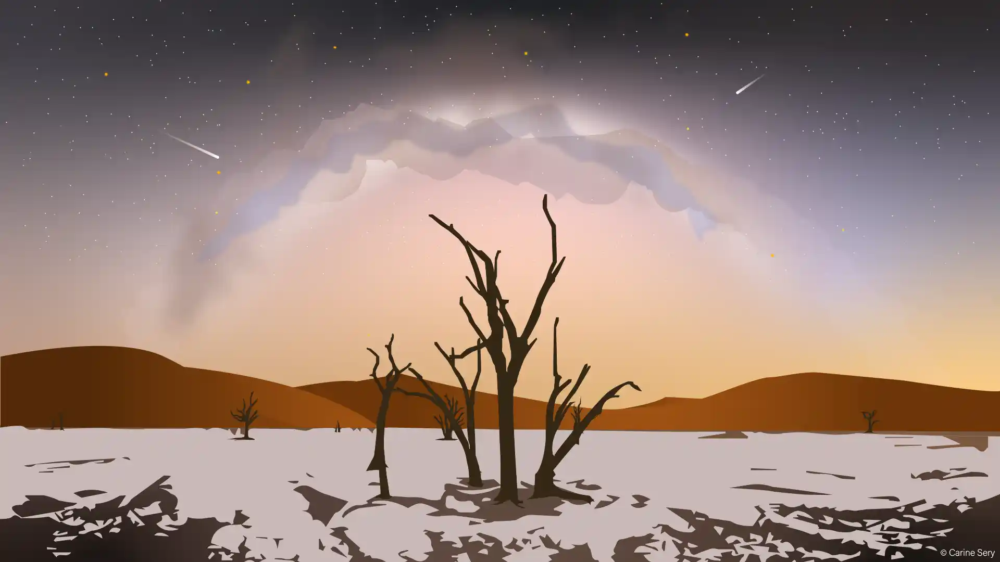

Fond d'écran vectoriel
Contexte

Dans le cadre des cours de webdesign, il a été demandé de réaliser un fond d'écran vectoriel d'un paysage.
Processus
- Choix d'une photographie inspirante
- Réalisation du dessin vectoriel
Choix d'une photographie inspirante
Très sensible à la beauté des paysages désertiques et des nuits étoilées, j'ai choisi de reproduire une photographie qui m'émerveille et que je serais heureuse d'utiliser en fond d'écran. Il s'agit d'une photographie de la Voie Lactée au-dessus de Deadvlei en Namibie. Elle a été réalisée par Stefan Liebermann.
La photographie est issue du site Ciel des hommes. L'intégralité de l'article peut être consulté en cliquant ici .
.
Réalisation du dessin vectoriel
Le dessin a été réalisé sous Adobe Illustrator et a nécessité l'utilisation d'outils tels que la plume et le pathfinder. La Voie Lactée a été la partie la plus délicate à réaliser en raison de sa lumière diffuse et de son aspect vaporeux.
Ce premier projet sur Adobe Illustrator fut véritablement inspirant pour moi.